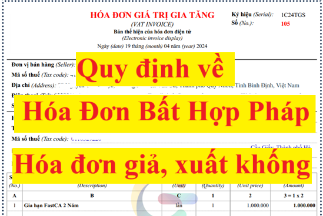
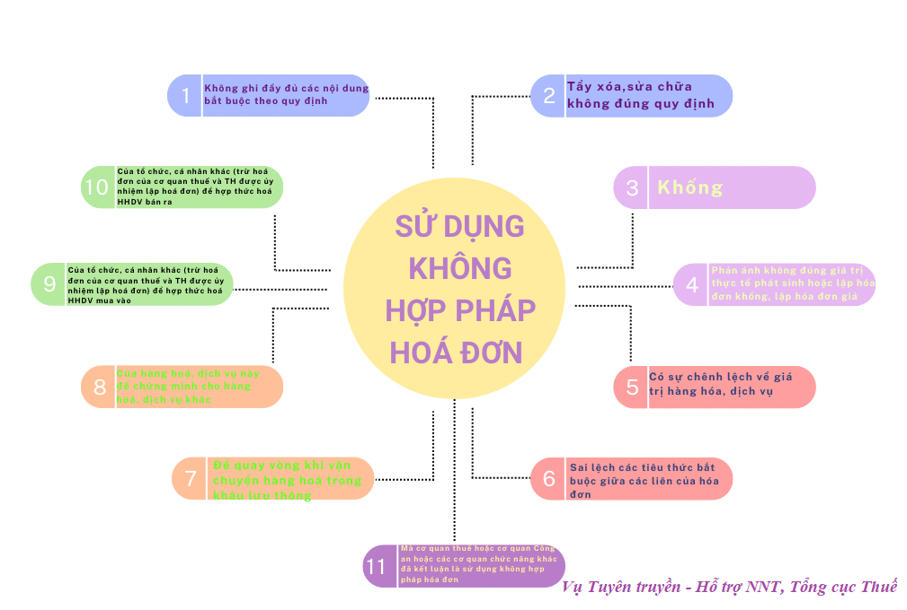
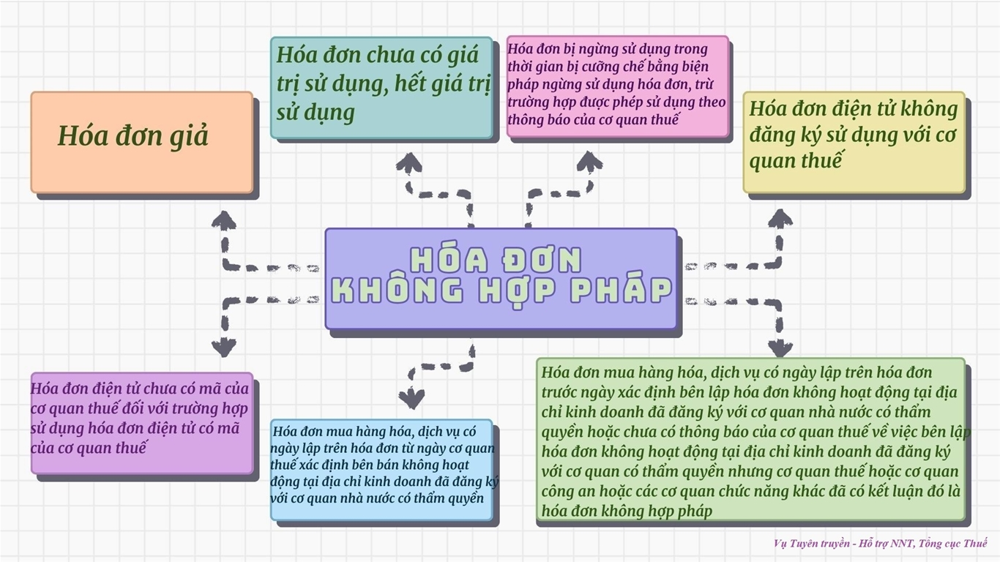

Thế nào là Hóa đơn không hợp pháp, hóa đơn giả, hóa đơn khống? Quy định xử phạt vi phạm khi sử dụng hóa đơn không hợp pháp, hóa đơn giả, hóa đơn khống
Theo điều 3 của Nghị định 123/2020/NĐ-CP quy định về hoá đơn điện tử thì:
Hóa đơn, chứng từ hợp pháp là hóa đơn, chứng từ đảm bảo đúng, đầy đủ về hình thức và nội dung theo quy định tại Nghị định 123/2020/NĐ-CP.
Kế Toán Diệu Tâm mời các bạn tham khảo thêm về
Hóa đơn, chứng từ giả là hóa đơn, chứng từ được in hoặc khởi tạo theo mẫu hóa đơn, chứng từ đã được thông báo phát hành của tổ chức, cá nhân khác hoặc in, khởi tạo trùng số của cùng một ký hiệu hóa đơn, chứng từ hoặc làm giả hóa đơn điện tử, chứng từ điện tử.
Sử dụng hóa đơn, chứng từ không hợp pháp là việc sử dụng hóa đơn, chứng từ giả; sử dụng hóa đơn, chứng từ chưa có giá trị sử dụng, hết giá trị sử dụng; sử dụng hóa đơn bị ngừng sử dụng trong thời gian bị cưỡng chế bằng biện pháp ngừng sử dụng hóa đơn, trừ trường hợp được phép sử dụng theo thông báo của cơ quan thuế; sử dụng hóa đơn điện tử không đăng ký sử dụng với cơ quan thuế; sử dụng hóa đơn điện tử chưa có mã của cơ quan thuế đối với trường hợp sử dụng hóa đơn điện tử có mã của cơ quan thuế; sử dụng hóa đơn mua hàng hóa, dịch vụ có ngày lập trên hóa đơn từ ngày cơ quan thuế xác định bên bán không hoạt động tại địa chỉ kinh doanh đã đăng ký với cơ quan nhà nước có thẩm quyền; sử dụng hóa đơn, chứng từ mua hàng hóa, dịch vụ có ngày lập trên hóa đơn, chứng từ trước ngày xác định bên lập hóa đơn, chứng từ không hoạt động tại địa chỉ kinh doanh đã đăng ký với cơ quan nhà nước có thẩm quyền hoặc chưa có thông báo của cơ quan thuế về việc bên lập hóa đơn, chứng từ không hoạt động tại địa chỉ kinh doanh đã đăng ký với cơ quan có thẩm quyền nhưng cơ quan thuế hoặc cơ quan công an hoặc các cơ quan chức năng khác đã có kết luận đó là hóa đơn, chứng từ không hợp pháp.

Sử dụng không hợp pháp hóa đơn, chứng từ là việc sử dụng: Hóa đơn, chứng từ không ghi đầy đủ các nội dung bắt buộc theo quy định; hóa đơn tẩy xóa, sửa chữa không đúng quy định; sử dụng hóa đơn, chứng từ khống (hóa đơn, chứng từ đã ghi các chỉ tiêu, nội dung nghiệp vụ kinh tế nhưng việc mua bán hàng hóa, dịch vụ không có thật một phần hoặc toàn bộ); sử dụng hóa đơn phản ánh không đúng giá trị thực tế phát sinh hoặc lập hóa đơn khống, lập hóa đơn giả; sử dụng hóa đơn có sự chênh lệch về giá trị hàng hóa, dịch vụ hoặc sai lệch các tiêu thức bắt buộc giữa các liên của hóa đơn; sử dụng hóa đơn để quay vòng khi vận chuyển hàng hóa trong khâu lưu thông hoặc dùng hóa đơn của hàng hóa, dịch vụ này để chứng minh cho hàng hóa, dịch vụ khác; sử dụng hóa đơn, chứng từ của tổ chức, cá nhân khác (trừ hóa đơn của cơ quan thuế và trường hợp được ủy nhiệm lập hóa đơn) để hợp thức hóa hàng hóa, dịch vụ mua vào hoặc hàng hóa, dịch vụ bán ra; sử dụng hóa đơn, chứng từ mà cơ quan thuế hoặc cơ quan công an hoặc các cơ quan chức năng khác đã kết luận là sử dụng không hợp pháp hóa đơn, chứng từ.

Theo điều 4 của Nghị định 125/2020/NĐ-CP quy định về các hành vi sử dụng hóa đơn, chứng từ không hợp pháp; sử dụng không hợp pháp hóa đơn, chứng từ thì:
+ Sử dụng hóa đơn, chứng từ trong các trường hợp sau đây là hành vi sử dụng hóa đơn, chứng từ không hợp pháp:
+/ Hóa đơn, chứng từ giả;
+/ Hóa đơn, chứng từ chưa có giá trị sử dụng, hết giá trị sử dụng;
+/ Hóa đơn bị ngừng sử dụng trong thời gian bị cưỡng chế bằng biện pháp ngừng sử dụng hóa đơn, trừ trường hợp được phép sử dụng theo thông báo của cơ quan thuế;
+/ Hóa đơn điện tử không đăng ký sử dụng với cơ quan thuế;
+/ Hóa đơn điện tử chưa có mã của cơ quan thuế đối với trường hợp sử dụng hóa đơn điện tử có mã của cơ quan thuế;
+/ Hóa đơn mua hàng hóa, dịch vụ có ngày lập trên hóa đơn từ ngày cơ quan thuế xác định bên bán không hoạt động tại địa chỉ kinh doanh đã đăng ký với cơ quan nhà nước có thẩm quyền;
+/ Hóa đơn, chứng từ mua hàng hóa, dịch vụ có ngày lập trên hóa đơn, chứng từ trước ngày xác định bên lập hóa đơn, chứng từ không hoạt động tại địa chỉ kinh doanh đã đăng ký với cơ quan nhà nước có thẩm quyền hoặc chưa có thông báo của cơ quan thuế về việc bên lập hóa đơn, chứng từ không hoạt động tại địa chỉ kinh doanh đã đăng ký với cơ quan có thẩm quyền nhưng cơ quan thuế hoặc cơ quan công an hoặc các cơ quan chức năng khác đã có kết luận đó là hóa đơn, chứng từ không hợp pháp.
+ Sử dụng hóa đơn, chứng từ trong các trường hợp sau đây là hành vi sử dụng không hợp pháp hóa đơn, chứng từ:
+/ Hóa đơn, chứng từ không ghi đầy đủ các nội dung bắt buộc theo quy định; hóa đơn tẩy xóa, sửa chữa không đúng quy định;
+/ Hóa đơn, chứng từ khống (hóa đơn, chứng từ đã ghi các chỉ tiêu, nội dung nghiệp vụ kinh tế nhưng việc mua bán hàng hóa, dịch vụ không có thật một phần hoặc toàn bộ); hóa đơn phản ánh không đúng giá trị thực tế phát sinh hoặc lập hóa đơn khống, lập hóa đơn giả;
+/ Hóa đơn có sự chênh lệch về giá trị hàng hóa, dịch vụ hoặc sai lệch các tiêu thức bắt buộc giữa các liên của hóa đơn;
+/ Hóa đơn để quay vòng khi vận chuyển hàng hóa trong khâu lưu thông hoặc dùng hóa đơn của hàng hóa, dịch vụ này để chứng minh cho hàng hóa, dịch vụ khác;
+/ Hóa đơn, chứng từ của tổ chức, cá nhân khác (trừ hóa đơn của cơ quan thuế và trường hợp được ủy nhiệm lập hóa đơn) để hợp thức hóa hàng hóa, dịch vụ mua vào hoặc hàng hóa, dịch vụ bán ra;
+/ Hóa đơn, chứng từ mà cơ quan thuế hoặc cơ quan công an hoặc các cơ quan chức năng khác đã kết luận là sử dụng không hợp pháp hóa đơn, chứng từ.

Xử phạt hóa đơn bất hợp pháp mới nhất
Theo điều 28 của Nghị định 125/2020/NĐ-CP quy định việc Xử phạt đối với hành vi sử dụng hóa đơn không hợp pháp, sử dụng không hợp pháp hóa đơn
1. Phạt tiền từ 20.000.000 đồng đến 50.000.000 đồng đối với hành vi sử dụng hóa đơn không hợp pháp, sử dụng không hợp pháp hóa đơn quy định tại Điều 4 Nghị định 125/2020/NĐ-CP nêu trên, trừ trường hợp được quy định tại điểm đ khoản 1 Điều 16 và điểm d khoản 1 Điều 17 Nghị định 125/2020/NĐ-CP.
Trong đó:
Điều 16. Xử phạt hành vi khai sai dẫn đến thiếu số tiền thuế phải nộp hoặc tăng số tiền thuế được miễn, giảm, hoàn
1. Phạt 20% số tiền thuế khai thiếu hoặc số tiền thuế đã được miễn, giảm, hoàn cao hơn so với quy định đối với một trong các hành vi sau đây:
đ) Sử dụng hóa đơn, chứng từ không hợp pháp để hạch toán giá trị hàng hóa, dịch vụ mua vào làm giảm số tiền thuế phải nộp hoặc làm tăng số tiền thuế được hoàn, số tiền thuế được miễn, giảm nhưng khi cơ quan thuế thanh tra, kiểm tra phát hiện, người mua chứng minh được lỗi vi phạm sử dụng hóa đơn, chứng từ không hợp pháp thuộc về bên bán hàng và người mua đã hạch toán kế toán đầy đủ theo quy định.
Điều 17. Xử phạt hành vi trốn thuế
1. Phạt tiền 1 lần số thuế trốn đối với người nộp thuế có từ một tình tiết giảm nhẹ trở lên khi thực hiện một trong các hành vi vi phạm sau đây:
d) Sử dụng hóa đơn không hợp pháp; sử dụng không hợp pháp hóa đơn để khai thuế làm giảm số thuế phải nộp hoặc tăng số tiền thuế được hoàn, số tiền thuế được miễn, giảm;
2. Biện pháp khắc phục hậu quả: Buộc hủy hóa đơn đã sử dụng.
Kế Toán Diệu Tâm mời các bạn tham khảo thêm về: